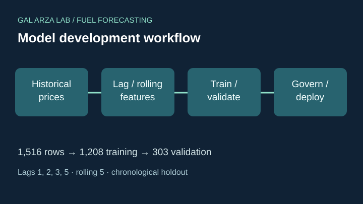
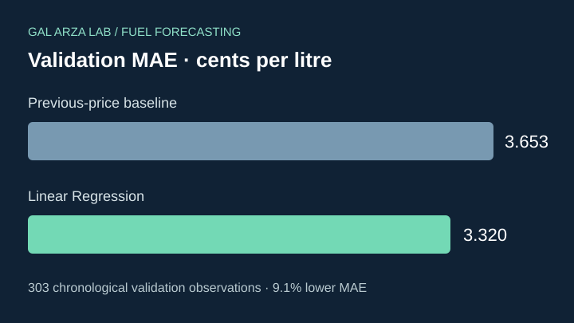

Forecast the next recorded-day gasoline price
This study investigates time-series approaches for forecasting regular gasoline prices in Calgary. Model quality must be evaluated on a consistent future holdout, not on in-sample performance, visual appeal or an AI platform’s claims.


Scope note: 1,516 recorded-day observations are documented through October 23, 2026. The original assignment worksheet mentions an October 20, 2026 cutoff; comparisons should use one reconciled, frozen data version.
ChatGPT
Time-series dataset inspection; lag and rolling-feature engineering; chronological model validation; decision rationale and governance.
Recorded validation results
Selected approach: Linear Regression; MAE: 3.320 ¢/L; RMSE: 4.804 ¢/L; baseline MAE: 3.653 ¢/L.
Reported feature set: lags 1, 2, 3 and 5; rolling five-observation mean and standard deviation, plus a previous change feature. Training: 1,208 rows; validation: 303 rows. This is an internal chronological split, not an independent evaluation of all six AI solutions.
Evidence note
Historical workflow and model comparison are evidenced. Local app file was produced in an earlier exercise, but is not bundled in this Lab package.
Add the original ChatGPT forecasting app, its screenshots and validated datasets as approved public assets.
Google Notebook / Colab
Notebook-based data exploration, reproducibility, code execution, models, diagnostics, and forecasting interface as demonstrated in your actual notebook.
Validation results
Not documented yet. No MAE, RMSE, accuracy ranking or deployment claims are assigned to this solution.
Evidence note
No separate notebook results or URL have been supplied. This heading intentionally accommodates Google Colab or NotebookLM until the actual product and output are identified.
Add notebook link, screenshots, executed cells, validation metrics and dataset version.
Google AI Studio
Prompt-driven implementation, interface design, model invocation, deployment options, and validation when documented.
Validation results
Not documented yet. No MAE, RMSE, accuracy ranking or deployment claims are assigned to this solution.
Evidence note
No Google AI Studio outputs or evaluation have been supplied.
Add application link, prompt methodology, screenshot and quantified metrics.
Perplexity
Research methodology, source use, generated code or application behavior, as supported by the actual implementation.
Validation results
Not documented yet. No MAE, RMSE, accuracy ranking or deployment claims are assigned to this solution.
Evidence note
No independent Perplexity test results or screenshots are available in this package.
Add project URL, sources, model code or exported result and accuracy metrics.
Claude
Development workflow, application design, execution, and time-series evaluation when provided.
Validation results
Not documented yet. No MAE, RMSE, accuracy ranking or deployment claims are assigned to this solution.
Evidence note
No Claude-specific results or deployed application have been supplied.
Add published artifact, methodology, screenshot and validation details.
Gemini
Feature engineering, forecasting behavior, model selection and testing against a common holdout dataset when available.
Validation results
Not documented yet. No MAE, RMSE, accuracy ranking or deployment claims are assigned to this solution.
Evidence note
No Gemini-specific results or deployment evidence have been supplied.
Add Gemini solution URL, screenshots, metrics and testing notes.
Summary comparison of solutions
This table is a structured comparison framework, not a six-way benchmark. Only independently documented results are quantified.
| Platform | Output evidence | Holdout MAE (¢/L) | RMSE (¢/L) | Public application |
|---|---|---|---|---|
| ChatGPT | Workflow and metrics documented | 3.320 | 4.804 | Not linked here |
| Google Notebook / Colab | Awaiting materials | Not verified | Not verified | Not linked |
| Google AI Studio | Awaiting materials | Not verified | Not verified | Not linked |
| Perplexity | Awaiting materials | Not verified | Not verified | Not linked |
| Claude | Awaiting materials | Not verified | Not verified | Not linked |
| Gemini | Awaiting materials | Not verified | Not verified | Not linked |
Fair comparison protocol
- Use identical price observations, recorded-day calendar, target definition and validation dates.
- Require every forecast to use only information available before the target date; exclude data leakage.
- Compute MAE, RMSE and median absolute error on identical rows, alongside the previous-price baseline.
- Compare interval coverage and width, reproducibility, execution cost, code quality and usability.
- Record each platform's version, prompts, code, screenshots and limitations before naming a winner.
Publication checklist: Place approved screenshots in assets/fuel/screenshots/; link original apps and reports only after validating access; add versioned comparable prediction CSVs. Never expose API keys, private prompts, account details or licensed third-party datasets.
The illustration graphics on this page are original explanatory SVGs. All six screenshot areas are placeholders until real screenshots are uploaded.